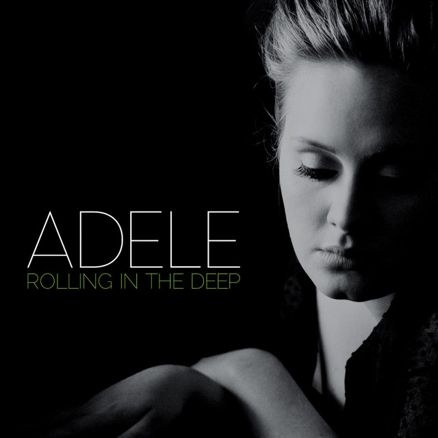
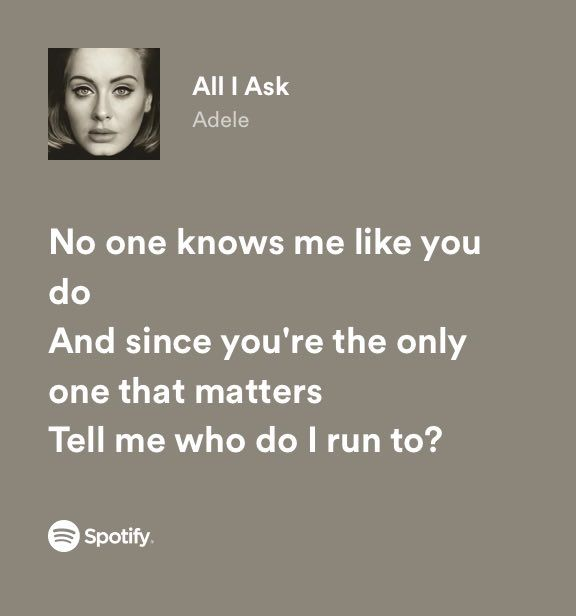
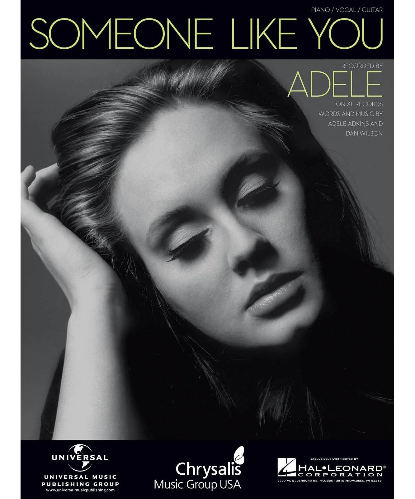

informacion personal
Mis Canciones Favoritas:
1. Set Fire To The Rain
LETRA:
I let it fall, my heart
And as it fell, you rose to claim it
It was dark, and I was over
Until you kissed my lips and you saved me
My hands, they were strong
But my knees were far too weak
To stand in your arms
Without falling to your feet
But there's a side to you
That I never knew, never knew
All the things you'd say
They were never true, never true
And the games you'd play
You would always win, always win
But I set fire to the rain
Watched it pour as I touched your face
Well, it burned while I cried
'Cause I heard it screaming out your name
Your name
When I lay with you
I could stay there, close my eyes
Feel you here forever
You and me together, nothing gets better
'Cause there's a side to you
That I never knew, never knew
All the things you'd say
They were never true, never true
And the games you'd play
You would always win, always win
But I set fire to the rain
Watched it pour as I touched your face
Well, it burned while I cried
'Cause I heard it screaming out your name
Your name
I set fire to the rain
And I threw us into the flames
When we fell, something died
'Cause I knew that that was the last time
The last time
Sometimes I wake up by the door
That heart you caught must be waiting for you
Even now, when we're already over
I can't help myself from looking for you
I set fire to the rain
Watched it pour as I touched your face
Well, it burned while I cried
'Cause I heard it screaming out your name
Your name
I set fire to the rain
And I threw us into the flames
When we fell, something died
'Cause I knew that that was the last time
The last time
Oh, oh, no
Let it burn
Oh, oh, oh
Let it burn
Let it burn

2. Rolling In The Deep
There's a fire starting in my heart
Reaching a fever pitch and it's bringing me out the dark
Finally, I can see you crystal clear
Go ahead and sell me out and I'll lay your shit bare
See how I'll leave with every piece of you
Don't underestimate the things that I will do
There's a fire starting in my heart
Reaching a fever pitch and it's bringing me out the dark
The scars of your love remind me of us
They keep me thinking that we almost had it all
The scars of your love, they leave me breathless
I can't help feeling
We could've had it all
(You're gonna wish you never had met me)
Rolling in the deep
(Tears are gonna fall, rolling in the deep)
You had my heart inside of your hand
(You're gonna wish you never had met me)
And you played it to the beat
(Tears are gonna fall, rolling in the deep)
Baby, I have no story to be told
But I've heard one of you and I'm gonna make your head burn
Think of me in the depths of your despair
Making home down there, as mine sure won't be shared
(You're gonna wish you never had met me)
The scars of your love remind me of us
(Tears are gonna fall, rolling in the deep)
They keep me thinking that we almost had it all
(You're gonna wish you never had met me)
The scars of your love, they leave me breathless
(Tears are gonna fall, rolling in the deep)
I can't help feeling
We could've had it all
(You're gonna wish you never had met me)
Rolling in the deep
(Tears are gonna fall, rolling in the deep)
You had my heart inside of your hand
(You're gonna wish you never had met me)
And you played it to the beat
(Tears are gonna fall, rolling in the deep)
We could've had it all
Rolling in the deep
You had my heart inside of your hand
But you played it with a beating
Throw your soul through every open door
Count your blessings to find what you look for
Turn my sorrow into treasured gold
You pay me back in kind and reap just what you sow
(You're gonna wish you never had met me)
We could've had it all
(Tears are gonna fall, rolling in the deep)
We could've had it all
(You're gonna wish you never had met me)
It all, it all, it all
(Tears are gonna fall, rolling in the deep)
We could've had it all
(You're gonna wish you never had met me)
Rolling in the deep
(Tears are gonna fall, rolling in the deep)
You had my heart inside of your hand
(You're gonna wish you never had met me)
And you played it to the beat
(Tears are gonna fall, rolling in the deep)
Could've had it all
(You're gonna wish you never had met me)
Rolling in the deep
(Tears are gonna fall, rolling in the deep)
You had my heart inside of your hand
(You're gonna wish you never had met me)
But you played it
You played it
You played it
You played it to the beat

3. All I Ask
I will leave my heart at the door
I won't say a word
They've all been said before, you know
So why don't we just play pretend
Like we're not scared of what's coming next
Or scared of having nothing left?
Look, don't get me wrong
I know there is no tomorrow
All I ask is
If this is my last night with you
Hold me like I'm more than just a friend
Give me a memory I can use
Take me by the hand while we do what lovers do
It matters how this ends
'Cause what if I never love again?
I don't need your honesty
It's already in your eyes
And I'm sure my eyes, they speak for me
No one knows me like you do
And since you're the only one that mattered
Tell me, who do I run to?
Look, don't get me wrong
I know there is no tomorrow
All I ask is
If this is my last night with you
Hold me like I'm more than just a friend
Give me a memory I can use
Take me by the hand while we do what lovers do
It matters how this ends
'Cause what if I never love again?
Let this be our lesson in love
Let this be the way we remember us
I don't wanna be cruel or vicious
And I ain't asking for forgiveness
All I ask is
If this is my last night with you
Hold me like I'm more than just a friend
Give me a memory I can use
Take me by the hand while we do what lovers do
It matters how this ends
'Cause what if I never love again?

4. Hello
Hello, it's me
I was wondering if after all these years you'd like to meet
To go over everything
They say that time's supposed to heal ya
But I ain't done much healing
Hello, can you hear me?
I'm in California dreaming about who we used to be
When we were younger and free
I've forgotten how it felt before the world fell at our feet
There's such a difference between us
And a million miles
Hello from the other side
I must've called a thousand times
To tell you I'm sorry for everything that I've done
But when I call, you never seem to be home
Hello from the outside
At least I can say that I've tried
To tell you I'm sorry for breaking your heart
But it don't matter, it clearly doesn't tear you apart anymore
Hello, how are you?
It's so typical of me to talk about myself, I'm sorry
I hope that you're well
Did you ever make it out of that town
Where nothing ever happened?
It's no secret that the both of us
Are running out of time
So hello from the other side (other side)
I must've called a thousand times (thousand times)
To tell you I'm sorry for everything that I've done
But when I call, you never seem to be home
Hello from the outside (outside)
At least I can say that I've tried (I've tried)
To tell you I'm sorry for breaking your heart
But it don't matter, it clearly doesn't tear you apart anymore
(Highs, highs, highs, highs, lows, lows, lows, lows)
Ooh, anymore
(Highs, highs, highs, highs, lows, lows, lows, lows)
Ooh, anymore
(Highs, highs, highs, highs, lows, lows, lows, lows)
Ooh, anymore
(Highs, highs, highs, highs, lows, lows, lows, lows)
Anymore
Hello from the other side (other side)
I must've called a thousand times (thousand times)
To tell you I'm sorry for everything that I've done
But when I call, you never seem to be home
Hello from the outside (outside)
At least I can say that I've tried (I've tried)
To tell you I'm sorry for breaking your heart
But it don't matter, it clearly doesn't tear you apart anymore

5. Someone Like You
I heard that you're settled down
That you found a girl and you're married now
I heard that your dreams came true
Guess she gave you things, I didn't give to you
Old friend
Why are you so shy?
It ain't like you to hold back
Or hide from the light
I hate to turn up out of the blue, uninvited
But I couldn't stay away, I couldn't fight it
I had hoped you'd see my face and that you'd be reminded
That for me, it isn't over
Never mind, I'll find someone like you
I wish nothing but the best for you, too
Don't forget me, I beg, I remember you said
Sometimes it lasts in love
But sometimes it hurts instead
Sometimes it lasts in love
But sometimes it hurts instead, yeah
You know how the time flies
Only yesterday was the time of our lives
We were born and raised in a summer haze
Bound by the surprise of our glory days
I hate to turn up out of the blue, uninvited
But I couldn't stay away, I couldn't fight it
I had hoped you'd see my face and that you'd be reminded
That for me, it isn't over
Never mind, I'll find someone like you
I wish nothing but the best for you, too
Don't forget me, I beg, I remember you said
Sometimes it lasts in love
But sometimes it hurts instead, yeah
Nothing compares, no worries or cares
Regrets and mistakes, they're memories made
Who would have known how bittersweet this would taste?
Never mind, I'll find someone like you
I wish nothing but the best for you
Don't forget me, I beg, I remember you said
Sometimes it lasts in love
But sometimes it hurts instead
Never mind, I'll find someone like you
I wish nothing but the best for you, too
Don't forget me, I beg, I remember you said
Sometimes it lasts in love
But sometimes it hurts instead
Sometimes it lasts in love
But sometimes it hurts instead, yeah, yeah
